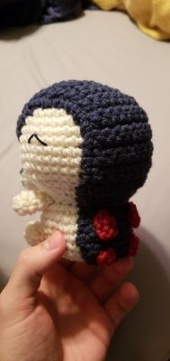

Crochet Patterns
Here I have created a list of patterns that I have used and were happy with. I've included photos of my final piece and links to the website the pattern came from.
| Tiny Striped Turtle |
|---|

|
| Chibi Cyndaquil
Unfortunately I do not remember where this pattern came from or who made it. Alterations: I did not add the flame. |
|---|
|  |
| Baby Hedgehog
This pattern was made by Kati Galusz and can be found on Ravelry. Here is a Youtube Video of another crafter's experience with the pattern. Warning: The eyelash yarn can be hard to use as the stitches can be difficult to see. |
|---|
 |
| Large Monkey
The creator of the pattern also has a Youtube Video of her making it. Alterations: I did not add the ears or tail. At the time I thought it looked like a sloth and left as is. |
|---|
| Coconut the Cat
The creator of the pattern also has a Youtube Video and playlist of her making it. Day 23 is where it starts and day 42 is the end. I do not have a better photo of this creation but it is the one with the white box around it. Very cute and simple. |
|---|